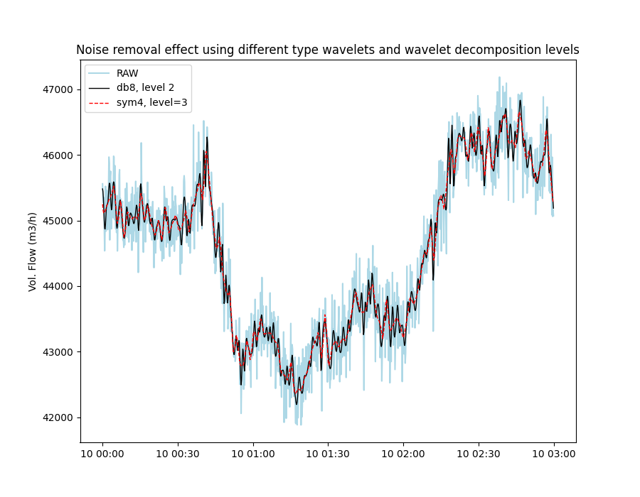

Note
Click here to download the full example code
Noise removal and trending with the Wavelet filter
Example of filtering to remove noise from time series data using the Wavelet filter. We use data from volumetric flow rate (m3/h) sensor with non-uniform sampling frequency measuring measuring flow into a compressor.
In the figure below it can be observed how applying different wavelet type filters can help remove some of the noise (fluctuations) from the data and such provide a more smooth an easily interpretable signal. Applying different type wavelets (db[1-20], sym[2-20] or coif[1-5]) will provide different results, but generally one will find that the lower numbered wavelets let more noise through while higher value wavelets results in a smoother signal. The same applies to wavelet decomposition level. The lower the number the more similar the result will be to the original data. Zero or negative numbers will fail and typically one will not want to choose a value higher than 6.
import os
import matplotlib.pyplot as plt
import pandas as pd
from indsl.filter import wavelet_filter
base_path = "" if __name__ == "__main__" else os.path.dirname(__file__)
data = pd.read_csv(os.path.join(base_path, "../../datasets/data/vol_flow_rate_m3h.csv"), index_col=0)
data = data.squeeze()
data.index = pd.to_datetime(data.index)
# TODO: Create load_flowrate_data method from above
# Apply the filter with different settings and plot the results
plt.figure(1, figsize=[9, 7])
# RAW data
plt.plot(data, color="lightblue", label="RAW")
# Filter applied using 'db6' wavelet and a level of 2
plt.plot(
wavelet_filter(data, level=2, wavelet="db8"),
color="black",
linewidth=1,
label="db8, level 2",
)
# Filter applied using sym4 wavelet, and a level of 3
plt.plot(
wavelet_filter(data, level=3, wavelet="sym4"),
color="red",
linewidth=1,
ls="--",
label="sym4, level=3",
)
plt.ylabel("Vol. Flow (m3/h)")
plt.title("Noise removal effect using different type wavelets and wavelet decomposition levels")
_ = plt.legend(loc=2)
plt.show()
Total running time of the script: ( 0 minutes 27.907 seconds)